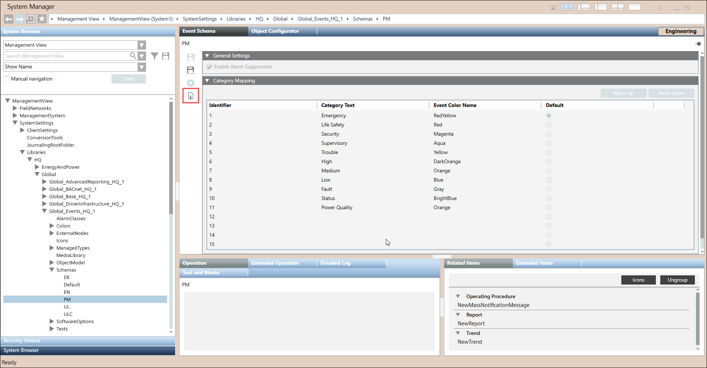
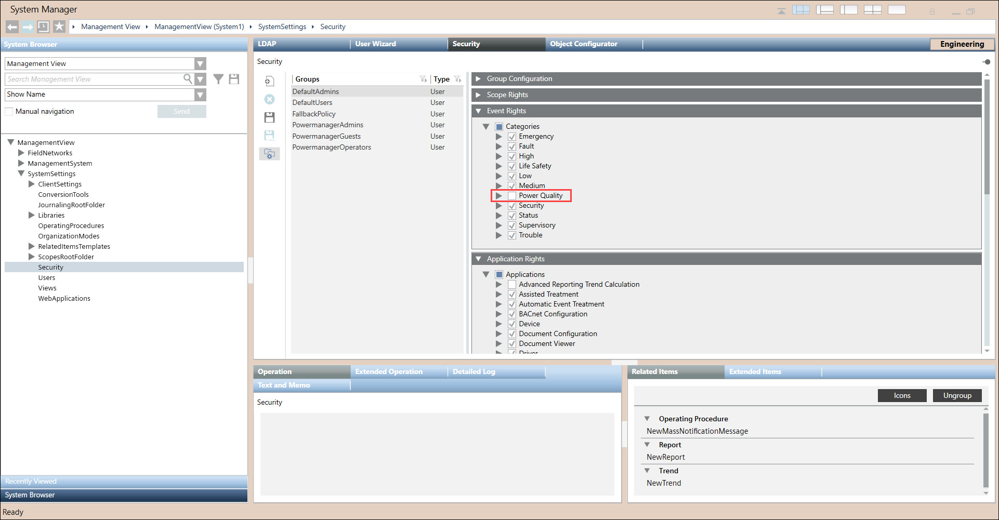
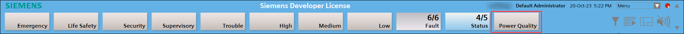

Configuring PowerQuality Alarms
If PowerQuality alarms are missing from alarms section at top, then perform below steps to add PowerQuality Alarms.
- You have added IEC 61850 and PowerQuality extension modules to your project.
- System manager is in Engineering mode.
- In System Browser, Management View is selected.
- Navigate to SystemSettings > Libraries > HQ > Global > Global_Events_HQ_1 > Schemas > PM.
- Click Activate
 .
.
- Close Powermanager.
- Navigate to SMC, and restart the project.
- Open Powermanager and navigate to Management View > SystemSettings > Security > Security tab > Event Rights expander > Power Quality.

- Click Save
 .
. - Exit and reopen Powermanager.
- PowerQuality Alarms configured successfully and are available in alarm section at the top.
